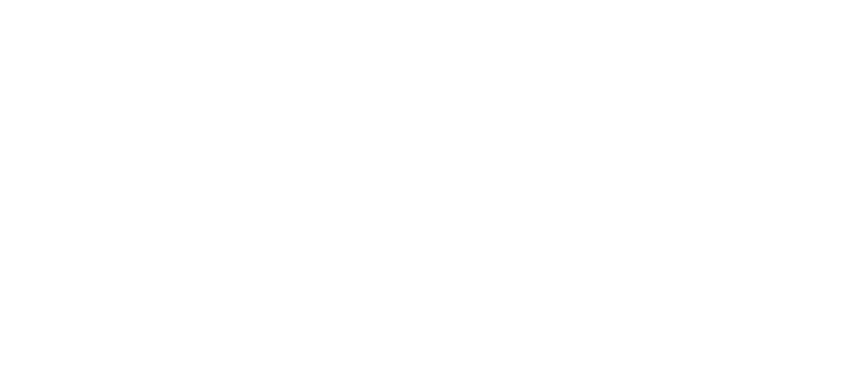
WAVE BEYOND THE SPATIAL FRAME / SLASH ACROSS THE SONIC LANE
從軟體到硬體，顛覆你的過往體驗，帶來全新的遊戲感受。
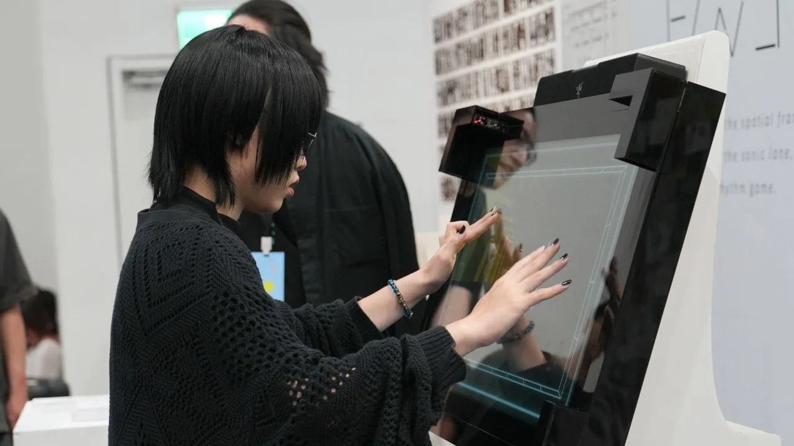
結合螢幕內多點觸控與螢幕外紅外線偵測器。使玩家嘗試超越以往認知，將遊玩體驗延伸至螢幕之外，創造與音遊全新的互動模式。
音符從畫面由360°分為24軌道配合音樂製作獨立譜面，帶來截然不同的視覺化體驗。
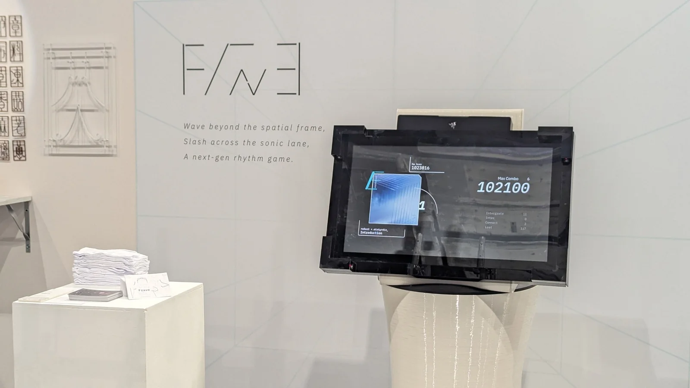
配備 32 吋 2K 60Hz 觸控面板，並配置 4 組對射式紅外線感測陣列，對應遊戲的觸控操作及超越螢幕框架的遊玩體驗。
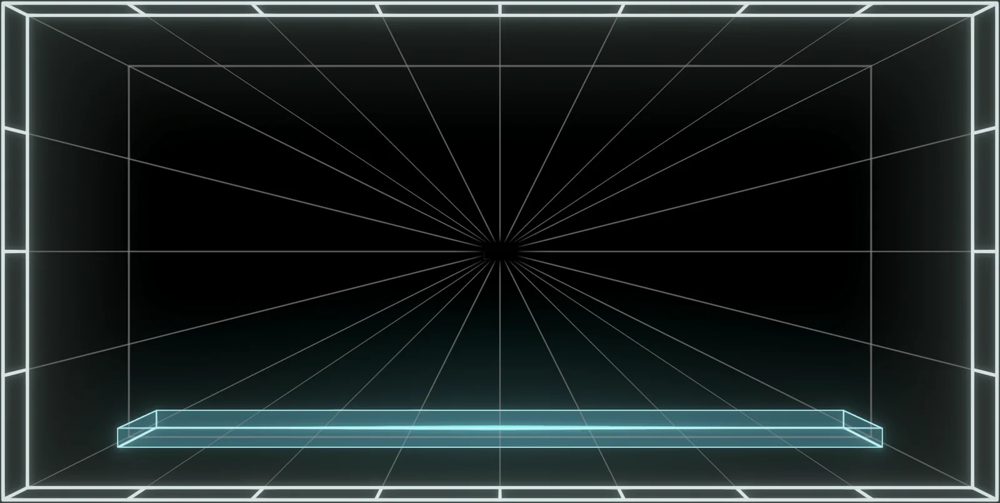
基礎點擊音符，伴隨金色雙壓提示效果。在指尖輕觸的節奏律動之外，似乎還隱藏著更多進階操作的可能性……？
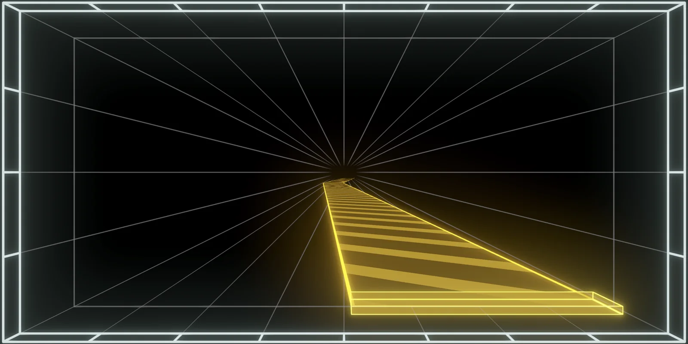
貫穿全曲的黃色長條音符。跟隨金黃光芒的流動與指引，沉浸在綿延不絕的旋律之中。
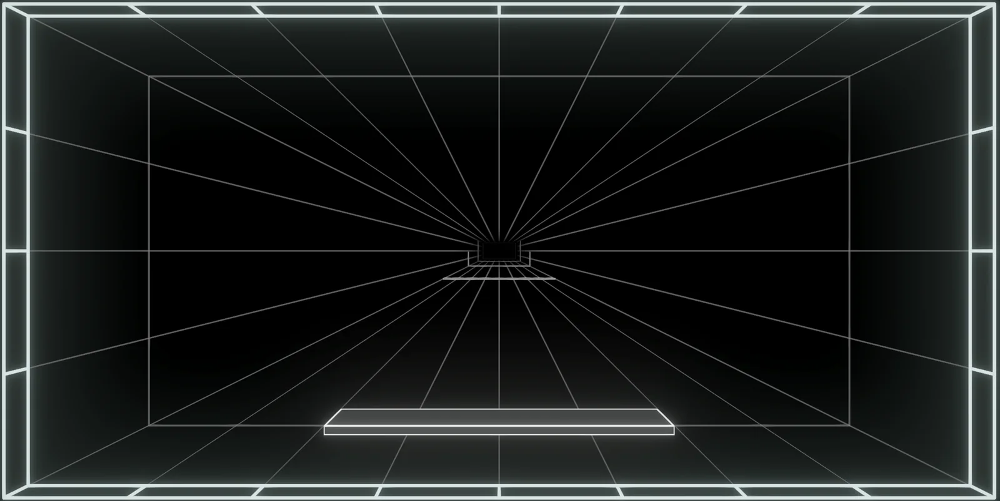
自由不受限的白色音符。只要觸碰到判定線，能以任何手勢自由滑動互動，將音符連綴成專屬於你的軌跡！
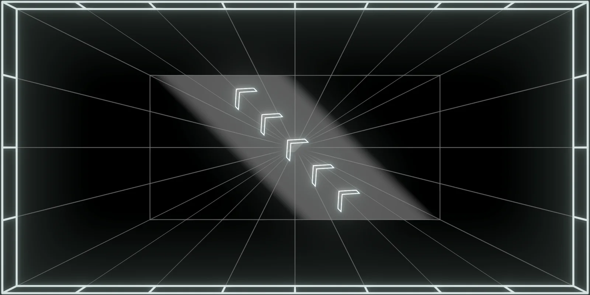
半透明的大範圍斬擊音符，伴隨指引箭頭貫穿全螢幕。順著導引方向俐落劃過畫面，以極具張力的揮擊體感斬開一瞬的空間！
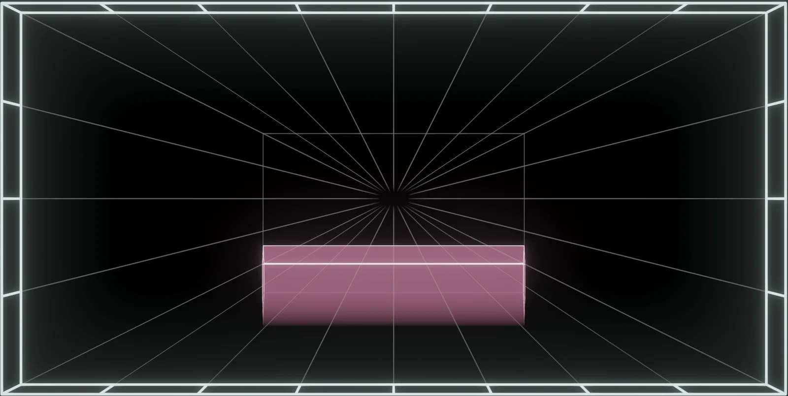
突破軌道的粉色音符，由螢幕四周的紅外線感測陣列判定。只要在感測空間內輕揮躍動即可觸發，大膽跨出螢幕邊界，揮舞心中的節奏！
首發收錄現場展出曲目，點擊任一曲目卡片即可即時播放 15 秒試聽：
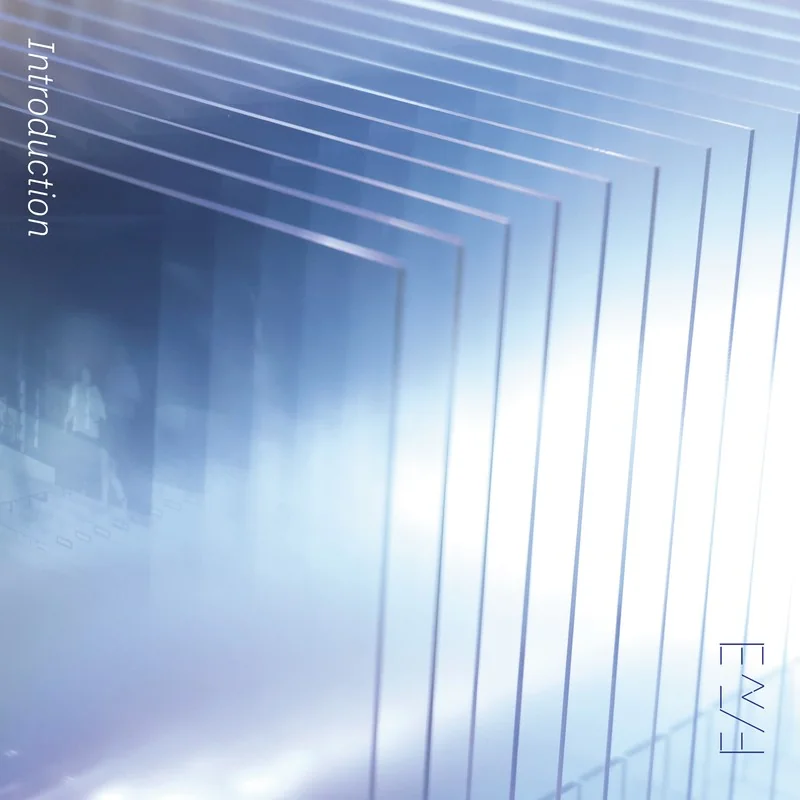
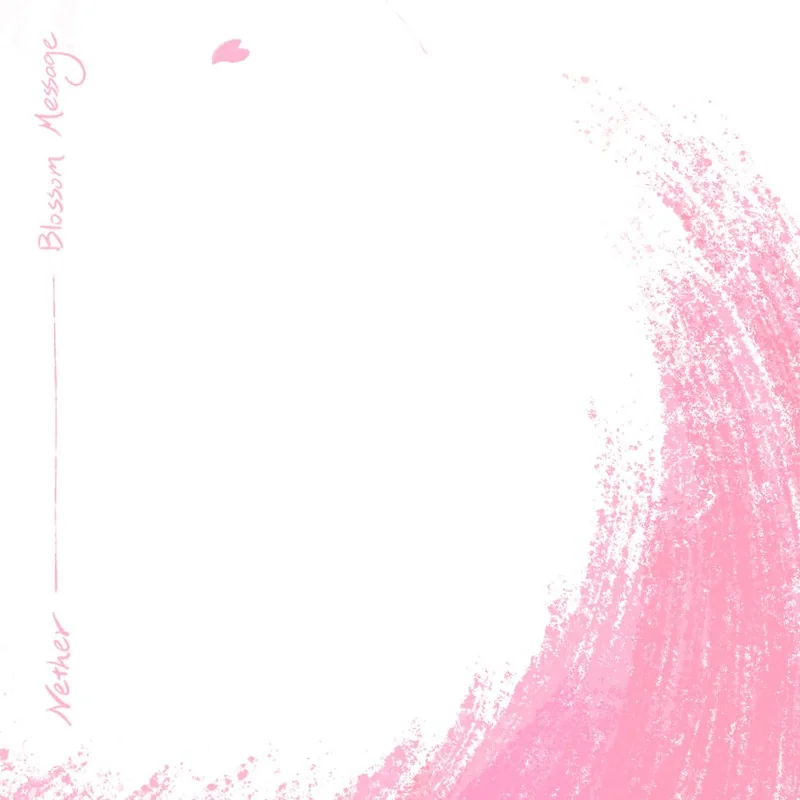
打造原型概念機，於2026新一代設計展「變動邊界」公開展出並由現場玩家實機試玩體驗：
從硬體架構到軟體的遊戲內控制引擎皆為自主開發構建，
展出期間累計超過六百名玩家現場實機試玩體驗。
展出期間累計30小時測試遊玩時數，擁有足夠運作穩定性。
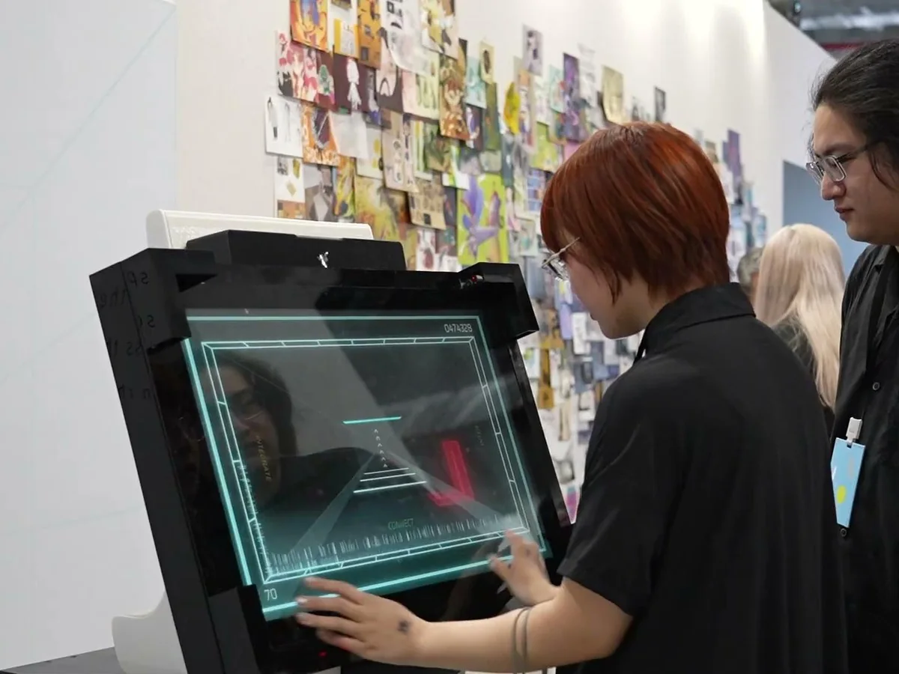
現場實機試玩體驗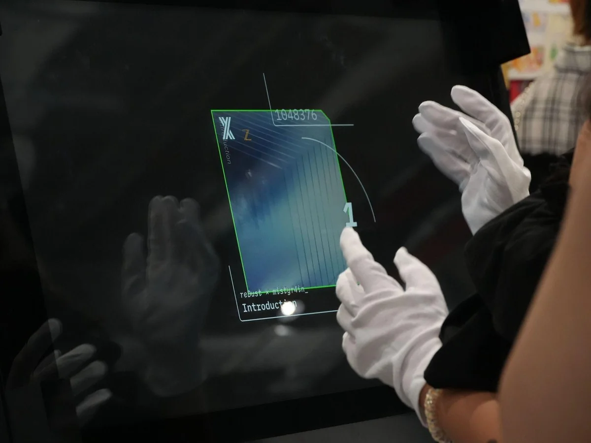
遊戲開始過場畫面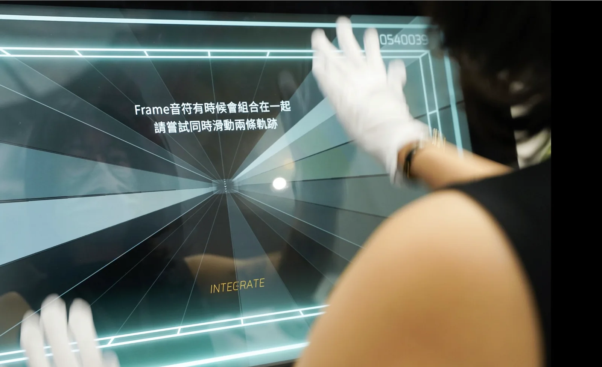
新手教學遊玩嘗試配備獨立工具鏈，具備後續內容持續產出能力：
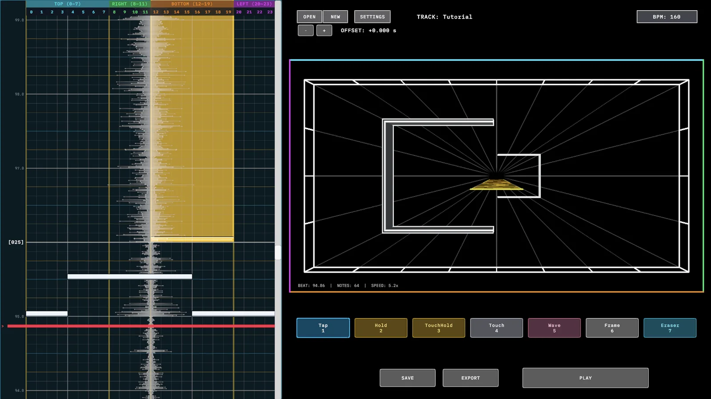
建構以結構化 JSON 為基礎的譜面架構，支援與遊戲內相同畫面的 3D 即時預覽，大幅提升譜面製作與校正效率。
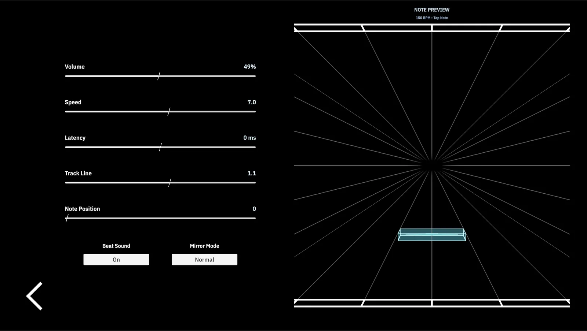
專為遊戲設定選單打造之 3D 渲染視窗，提供所見即所得的速度倍率、判定偏移與打擊音效調校，降低玩家的手感適應成本。
歡迎場館營運、音樂收錄與展出洽談：
提供 1:1 實體概念機進駐合作方案、短期 Location Test 營運測試。
歡迎原創音樂創作者、電子音樂廠牌授權樂曲收錄或共同策劃專屬聯名曲包。
獨立遊戲展、數位娛樂展實機出展邀約與技術交流洽談。